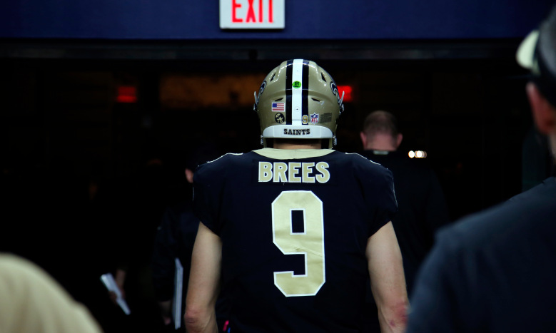
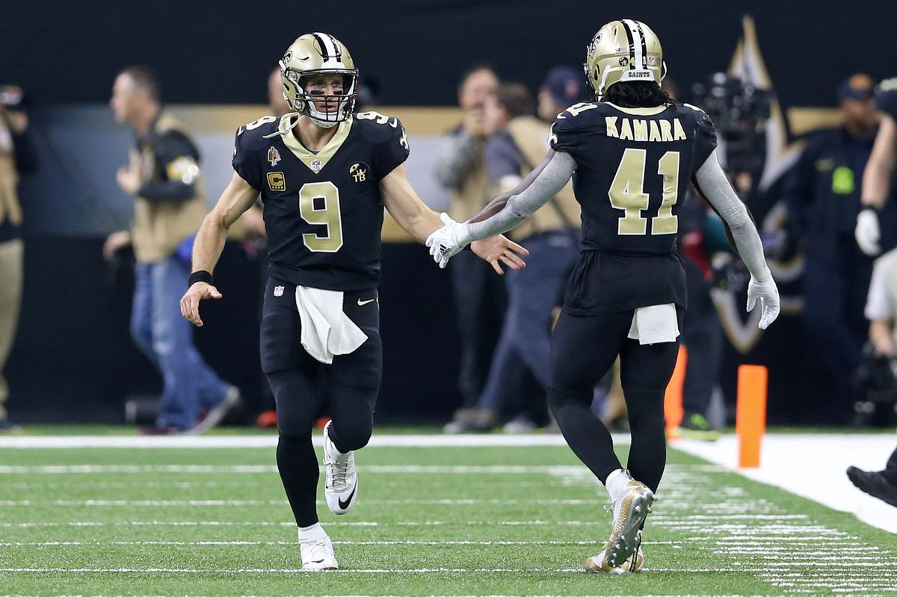
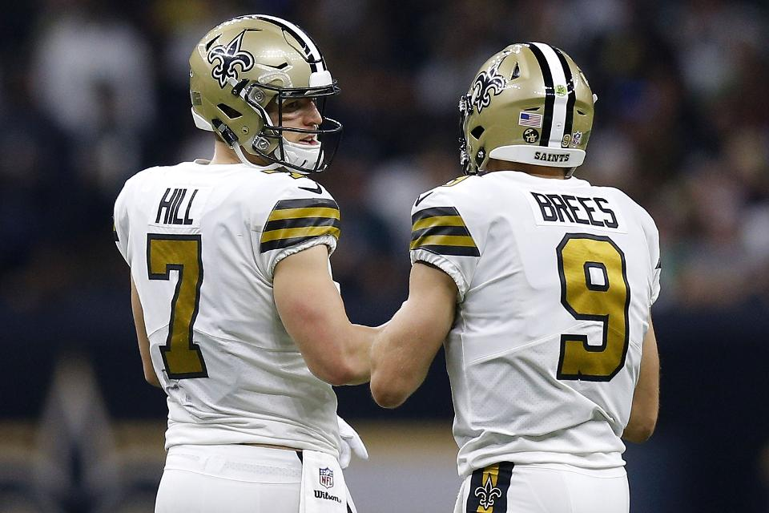

Drew Brees is entering his 20th season in his NFL career and after another disapoitning playoff loss, does he have another season left in the tank? Will it be beneficial for the team if he decides to walk away from the game? The saints quarterback is now 41 years old, and could be on the decline with his lack of arm strength and possible future injuries.
If Brees decides to retire the saints would have a big hole to fill in replacing the franchise quarterback. Two names that could fill that void would be Teddy Bridgewater and Taysom Hill. Teddy Bridgewater is coming off a revival season where he led the saints to 5-0 in Brees' absence due to injury. Taysom Hill has shown flashes of greatness in the plays he's made for the saints this season, lining up in 5 different positions on the field. Can the Saints financially afford Brees? Who should get the starting job? Is it time to move on from Brees?
This year the saints have big decisions to make in free agency with stars like Alvin Kamara, Marshaun Lattimore and Ryan Ramczyk all becoming free agents. If the saints want to keep their talented young core together, Brees will need to take a significant paycut. Kamara, Lattimore and Ramczyk are all coming off Pro-bowl seasons, and will be expecting to get huge contracts which leaves the saints in a tight budget this off season.
With so much talent and so little cap space, it is probable that the Saints won't have the funds to sign all of their key players. Ramczyk is a vital piece to this offense, as he was ranked with a grade of 91.0 by Pro Football Focus in the 2019 season. 
If Brees does decide to retire the saints would likely hand over the starting role to 29 year old backupquarterback Taysom Hill. Hill has been used as a swiss army knife in the saints offense, and has been very effective in that role. The only downside of Hill becoming the starter, is that he would be limited to only playing the quarterback position.
Hill's ability to scramble out of the pocket opens up a whole new type of offense for the saints. If named the starter, you could expect Sean Payton to redesign the offense to fit Hill's game. Hill's arm strength also adds another new element to this saints offense that has been absent for some time. I 
Although Brees missed 5 games in the 2019 season, he still finished in the top 5 ranking for passer rating and total passing touchdowns, showing that his game is still at the top of the league. He has led the league in completion percentage three straight years and has been a key contributer to the saints offense for over a decade. The only weakness in Brees' game, in his lack of arm strength. This flaw has been evident in recent playoff games, as opposing defenses have been able to captilize on intercepting deep passes from Brees. Here's where Brees ranked in passing stats the last season:
If Brees can stay healthy and afordable, it would be smart for him and the team to compete for a title one more year. The numbers for Brees are still at the top of the league and with him on the field the saints are given a strong advantage and a high chance of success.

Jack Collins
The University of New Orleans
Email: jacolli4@uno.edu